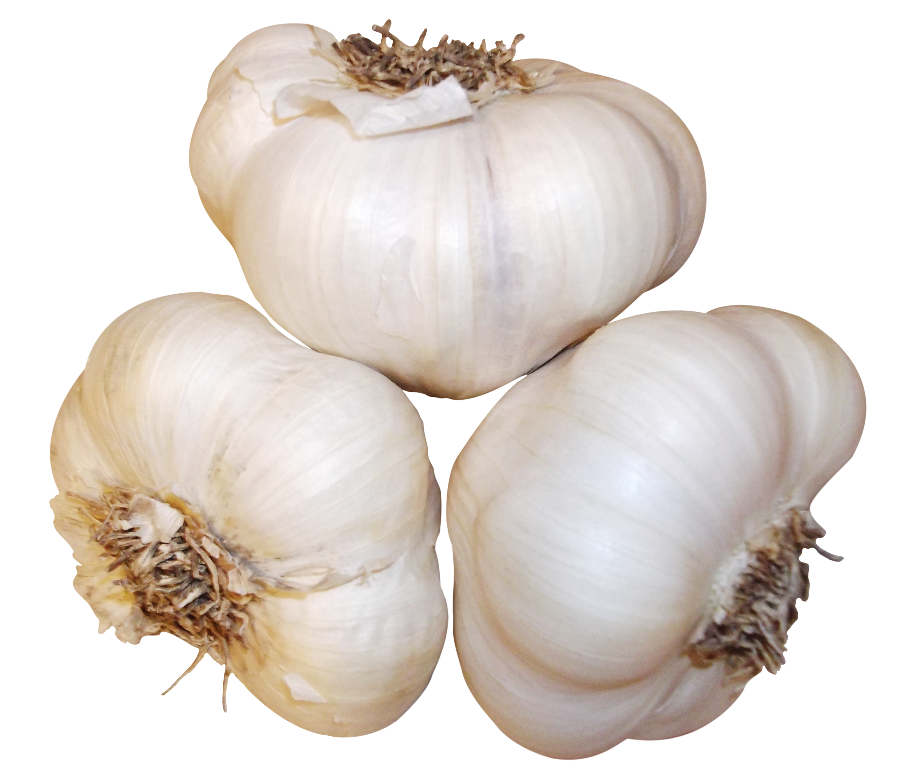
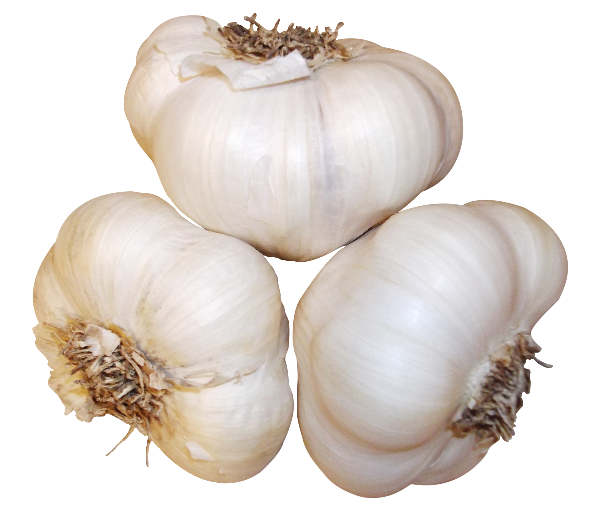
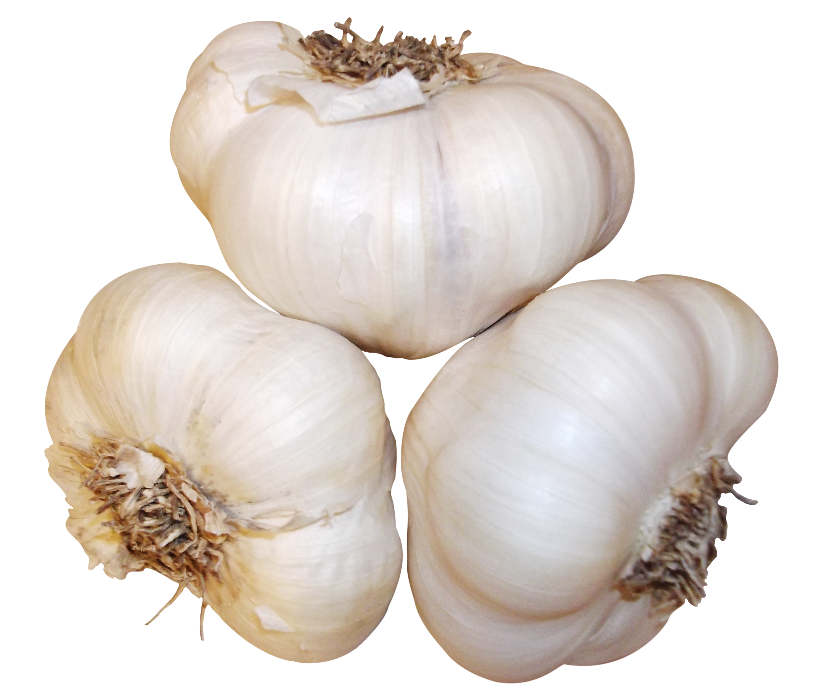

objects after discord //tutorial
 

1
2
3
1
2
3
4
5
- 6 1
- 6 2
- 6 3
- 6 4
- 6 5
- 6 6
- 6 7
- 6 8
click to change the image
hover over the image to change its content
objects after discord //tutorial

click to change the image
hover over the image to change its content